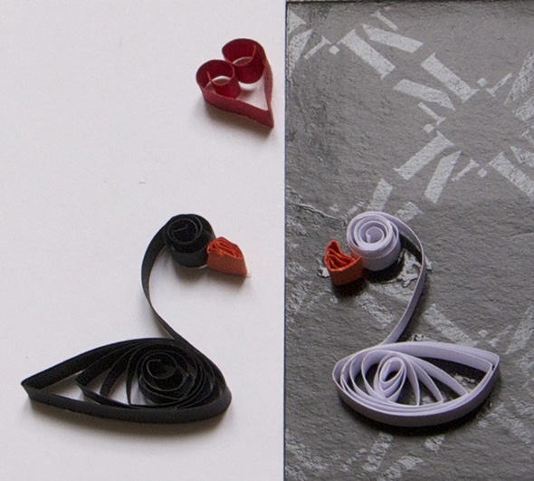
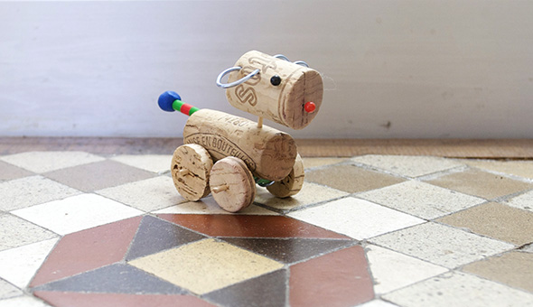
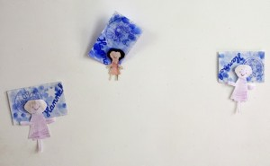
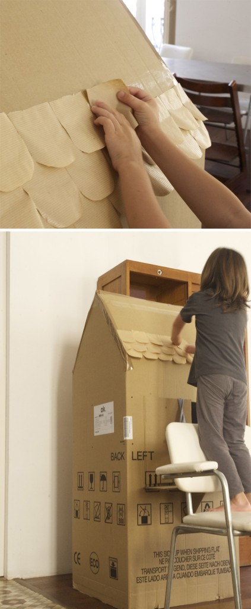

Pinterest
Instagram
ES
EN
DE
☰ Menü
Home
Das Haus
Zubehör
Dekoration
Faltanleitung
Illustration
Trinkflaschen
Bastelheft
App
Blog
Feste
Weihnachten
Ostern
Halloween
Fasching & Kostüme
Valentinstag
Geburtstag
Mutter-/Vatertag
Schulanfang
Jahreszeiten
Frühling
Sommer
Herbst
Winter
Was machen
Spielzeug
Spiele
Druckvorlagen
Essen & Rezepte
Dekoration
Malen
Experimente
Draußen
Lernen
Tiere
Geschenke & Schmuck
Bauen & Tricks
Weitere Ideen
Material
Papier
Karton
Papierrollen
Recycling
Steine
Blätter & Natur
Stoff & Nähen
Start
›
Blog
›
Material
Material
Kategorie
Material
Erste Quilling-Versuche

Material
Kleiner Korkhund

Aktivität
Gitarrenbrosche
Aktivität
und die Geschwister
Material
Briefmarken erfundener Länder
Material
Briefmarkensammlung
Material
Flugzeug aus einem Karton
Material
Papierarmbänder
Material
Eulen-Anleitung zum Herunterladen
Material
Klorollen-Fledermäuse für Halloween
Material
Selbstgemachtes Washi-Tape
Material
America's Cup
Material
Ein Geschenk von Noah
Material
Piraten auf See
Material
Piratensteine
Aktivität
Zahlensteine sortieren
Material
Eulen aus Knete
Material
Das Häuschen: Detail 3
Material
Freundinnen an der Wand

Material
Das Häuschen: Detail 1

Material
Eule für einen Bastel-Tausch
Material
Ritterschilde
Aktivität
Briefkasten aus Cornflakes-Karton
Material
Hannahs Kuscheltier
← Neuere
Seite 4 / 10
Ältere →